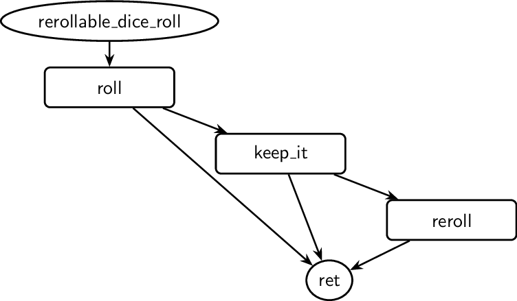

4Hammer
Our flagship example is 4Hammer (source code), a reinforcement learning environment that encodes extremely complex interactive sequences in just ~5,000 lines of code—including the graphics.
Thanks to Rulebook, 4Hammer automatically gains:
Reinforcement learning support
Fuzzer-based testing
Textual state encoding
Trace replay
Remote execution
Self-configuring UIs
—all available in both browser and desktop builds.
Depending on the complexity of the problem 4Hammer is addressing, 5,000 lines of code might seem like a lot—or not. It’s difficult to make a direct comparison, but at feature parity, we believe that using another language would have required 5 to 20 times more code, depending on the language and tooling.
The project rationale is explained in detail in the related paper
The Size of the Problem
4Hammer implements a digital version of Warhammer 40,000, designed specifically for validating reinforcement learning environments.
Warhammer 40,000 is the most-played miniature board game in the world, with hundreds of thousands of games played at a competitive level each year. The community is deeply invested in understanding the game better and has already built tools in narrow domains (like dice probability calculators). But general simulation of the full game is currently intractable.
Challenges include:
Hundreds of unique game units, each with slight rule variations and quirks.
Rule interactions that require physics simulation to resolve spatial mechanics.
Highly non-linear interactive sequences, where small state differences can completely change the legal set of actions. (Example: applying the special rules Torrent and Devastating Wounds to a unit fundamentally alters its behavior during the Single Attack sequence.)
Frequent updates from the publisher, making full digital replication difficult to maintain.
Scope
4Hammer does not aim to fully implement:
Every single unit profile (there are hundreds).
A full physics simulation of the game.
These features aren’t necessary unless you’re building a perfect digital twin for resale or official use.
Instead, 4Hammer focuses on:
Implementing all core rules required to play 6 out of the 35 factions.
Using Combat Patrol mode as the scenario baseline.
Enabling neural networks to interact with complex strategic mechanics.
This scope is sufficient for training and validating learning agents at the strategic level—deciding how to allocate resources and respond to game events. Once this is solved, we can begin layering in more detailed tactical rules (e.g. unit placement, collisions, line of sight) and move toward superhuman play under the full rule set of Warhammer 40,000.
Visualizing the Game’s Complexity
The image below shows all possible interactive actions available to the player in the 4Hammer implementation.
Edges indicate that RLC believes the action at the target of the arrow can sometimes—or always—follow the source action.
Diamonds represent decision points, where the player must choose between multiple next actions.
Solid boxes represent atomic choices, such as deciding whether to use an optional rule.
Dashed boxes denote the invocation of a sub-interactive sequence.
![digraph g {
"0x615cd69d1760"[shape=ellipse, label="evaluate_random_stat", style=solid]
"0x615cd69d1760" -> "0x615cd69d17f0"
"0x615cd69d1760" -> "0x615cd69d3e50"
"0x615cd69d17f0"[shape=ellipse, label="ret", style=solid]
"0x615cd69d3e50"[shape=box, label="quantity", style=solid]
"0x615cd69d3e50" -> "0x615cd69d17f0"
"0x615cd6943ae0"[shape=box, label="reroll_pair", style=solid]
"0x615cd6943ae0" -> "0x615cd69d4c40"
"0x615cd69a20b0"[shape=ellipse, label="rerollable_pair_dices_roll", style=solid]
"0x615cd69a20b0" -> "0x615cd69a6330"
"0x615cd69a38b0"[shape=box, label="keep_it", style=solid]
"0x615cd69a38b0" -> "0x615cd69d4c40"
"0x615cd69a38b0" -> "0x615cd6943ae0"
"0x615cd69a6330"[shape=box, label="roll_pair", style=solid]
"0x615cd69a6330" -> "0x615cd69d4c40"
"0x615cd69a6330" -> "0x615cd69a38b0"
"0x615cd69d4c40"[shape=ellipse, label="ret", style=solid]
"0x615cd69484e0"[shape=ellipse, label="rerollable_dice_roll", style=solid]
"0x615cd69484e0" -> "0x615cd69984f0"
"0x615cd6948780"[shape=ellipse, label="ret", style=solid]
"0x615cd69984f0"[shape=box, label="roll", style=solid]
"0x615cd69984f0" -> "0x615cd6948780"
"0x615cd69984f0" -> "0x615cd69cb3b0"
"0x615cd69cb3b0"[shape=box, label="keep_it", style=solid]
"0x615cd69cb3b0" -> "0x615cd6948780"
"0x615cd69cb3b0" -> "0x615cd69d1be0"
"0x615cd69d1be0"[shape=box, label="reroll", style=solid]
"0x615cd69d1be0" -> "0x615cd6948780"
"0x615cd694bf00"[shape=box, label="devastating_damage_roll", style=dotted]
"0x615cd694bf00" -> "0x615cd69f7270"
"0x615cd694bf00" -> "0x615cd6a0e2e0"
"0x615cd694bf00" -> "0x615cd6a02200"
"0x615cd69da5b0"[shape=box, label="damage_roll", style=dotted]
"0x615cd69da5b0" -> "0x615cd69f7270"
"0x615cd69da5b0" -> "0x615cd69db690"
"0x615cd69da5b0" -> "0x615cd6a14040"
"0x615cd69db690"[shape=box, label="on_model_destroyed", style=dotted]
"0x615cd69db690" -> "0x615cd69f7270"
"0x615cd69f7270"[shape=ellipse, label="ret", style=solid]
"0x615cd69fa690"[shape=ellipse, label="single_attack", style=solid]
"0x615cd69fa690" -> "0x615cd69f7270"
"0x615cd69fa690" -> "0x615cd6a0e2e0"
"0x615cd69fa690" -> "0x615cd69fbbe0"
"0x615cd69fa690" -> "0x615cd6a02200"
"0x615cd69fbbe0"[shape=box, label="", style=dotted]
"0x615cd69fbbe0" -> "0x615cd69f7270"
"0x615cd69fbbe0" -> "0x615cd6a0e2e0"
"0x615cd69fbbe0" -> "0x615cd6a02200"
"0x615cd6a02200"[shape=box, label="", style=dotted]
"0x615cd6a02200" -> "0x615cd69f7270"
"0x615cd6a02200" -> "0x615cd6a0e2e0"
"0x615cd6a02200" -> "0x615cd694bf00"
"0x615cd6a02200" -> "0x615cd6a02200"
"0x615cd6a0e2e0"[shape=box, label="allocate_wound", style=solid]
"0x615cd6a0e2e0" -> "0x615cd69f7270"
"0x615cd6a0e2e0" -> "0x615cd69db690"
"0x615cd6a0e2e0" -> "0x615cd6a14040"
"0x615cd6a14040"[shape=box, label="", style=dotted]
"0x615cd6a14040" -> "0x615cd69da5b0"
"0x615cd69ab780"[shape=box, label="roll", style=solid]
"0x615cd69ab780" -> "0x615cd69d7be0"
"0x615cd69acf70"[shape=box, label="skip", style=solid]
"0x615cd69acf70" -> "0x615cd69d7be0"
"0x615cd69ad060"[shape=box, label="use_violent_unbidding", style=solid]
"0x615cd69ad060" -> "0x615cd69d96f0"
"0x615cd69d7a90"[shape=ellipse, label="on_model_destroyed", style=solid]
"0x615cd69d7a90" -> "0x615cd69e5670"
"0x615cd69d7a90" -> "0x615cd69d7be0"
"0x615cd69d7be0"[shape=ellipse, label="ret", style=solid]
"0x615cd69d96f0"[shape=box, label="roll", style=solid]
"0x615cd69d96f0" -> "0x615cd69ab780"
"0x615cd69d96f0" -> "0x615cd69d7be0"
"0x615cd69e5670"[shape=diamond, label="", style=solid]
"0x615cd69e5670" -> "0x615cd69acf70"
"0x615cd69e5670" -> "0x615cd69ad060"
"0x615cd69ede10"[shape=box, label="attack", style=dotted]
"0x615cd69ede10" -> "0x615cd69ede10"
"0x615cd69ede10" -> "0x615cd69f2a40"
"0x615cd69f2800"[shape=ellipse, label="resolve_weapon", style=solid]
"0x615cd69f2800" -> "0x615cd69f42c0"
"0x615cd69f2a40"[shape=ellipse, label="ret", style=solid]
"0x615cd69f42c0"[shape=box, label="attacks_roll", style=dotted]
"0x615cd69f42c0" -> "0x615cd69ede10"
"0x615cd69f42c0" -> "0x615cd69f2a40"
"0x615cd69f1240"[shape=ellipse, label="ret", style=solid]
"0x615cd6a34d00"[shape=ellipse, label="resolve_model_attack", style=solid]
"0x615cd6a34d00" -> "0x615cd69f1240"
"0x615cd6a34d00" -> "0x615cd6a3ca30"
"0x615cd6a35970"[shape=box, label="select_weapon", style=solid]
"0x615cd6a35970" -> "0x615cd6a3cf40"
"0x615cd6a3c800"[shape=box, label="skip", style=solid]
"0x615cd6a3c800" -> "0x615cd69f1240"
"0x615cd6a3ca30"[shape=diamond, label="", style=solid]
"0x615cd6a3ca30" -> "0x615cd6a3c800"
"0x615cd6a3ca30" -> "0x615cd6a35970"
"0x615cd6a3cf40"[shape=box, label="resolve_weapon", style=dotted]
"0x615cd6a3cf40" -> "0x615cd69f1240"
"0x615cd6a3cf40" -> "0x615cd6a3ca30"
"0x615cd695d090"[shape=diamond, label="", style=solid]
"0x615cd695d090" -> "0x615cd6a4cdc0"
"0x615cd695d090" -> "0x615cd6a4ccd0"
"0x615cd695d090" -> "0x615cd6a50990"
"0x615cd695d090" -> "0x615cd6a54a40"
"0x615cd695d090" -> "0x615cd6a5b6a0"
"0x615cd695d090" -> "0x615cd6a581b0"
"0x615cd6a40890"[shape=ellipse, label="use_attack_stratagems", style=solid]
"0x615cd6a40890" -> "0x615cd6a4c230"
"0x615cd6a40b00"[shape=ellipse, label="ret", style=solid]
"0x615cd6a417e0"[shape=box, label="no_defensive_stratagem", style=solid]
"0x615cd6a417e0" -> "0x615cd695d090"
"0x615cd6a428e0"[shape=box, label="tough_as_squig_hide", style=solid]
"0x615cd6a428e0" -> "0x615cd695d090"
"0x615cd6a44600"[shape=box, label="use_gene_wrought_resiliance", style=solid]
"0x615cd6a44600" -> "0x615cd695d090"
"0x615cd6a470b0"[shape=box, label="use_daemonic_fervour", style=solid]
"0x615cd6a470b0" -> "0x615cd695d090"
"0x615cd6a48cc0"[shape=box, label="use_unyielding", style=solid]
"0x615cd6a48cc0" -> "0x615cd695d090"
"0x615cd6a4c230"[shape=diamond, label="", style=solid]
"0x615cd6a4c230" -> "0x615cd6a44600"
"0x615cd6a4c230" -> "0x615cd6a428e0"
"0x615cd6a4c230" -> "0x615cd6a470b0"
"0x615cd6a4c230" -> "0x615cd6a48cc0"
"0x615cd6a4c230" -> "0x615cd6a417e0"
"0x615cd6a4ccd0"[shape=box, label="no_offensive_stratagem", style=solid]
"0x615cd6a4ccd0" -> "0x615cd6a40b00"
"0x615cd6a4cdc0"[shape=box, label="use_veteran_instincts", style=solid]
"0x615cd6a4cdc0" -> "0x615cd6a40b00"
"0x615cd6a504e0"[shape=box, label="", style=dotted]
"0x615cd6a504e0" -> "0x615cd6a535e0"
"0x615cd6a504e0" -> "0x615cd6a529c0"
"0x615cd6a50990"[shape=box, label="use_dark_pact", style=solid]
"0x615cd6a50990" -> "0x615cd6a504e0"
"0x615cd6a529c0"[shape=box, label="", style=dotted]
"0x615cd6a529c0" -> "0x615cd6a535e0"
"0x615cd6a535e0"[shape=box, label="select_ability", style=solid]
"0x615cd6a535e0" -> "0x615cd6a40b00"
"0x615cd6a54a40"[shape=box, label="use_swift_kill", style=solid]
"0x615cd6a54a40" -> "0x615cd6a40b00"
"0x615cd6a581b0"[shape=box, label="use_vindictive_strategy", style=solid]
"0x615cd6a581b0" -> "0x615cd6a40b00"
"0x615cd6a59a20"[shape=box, label="select_model", style=solid]
"0x615cd6a59a20" -> "0x615cd6a5f590"
"0x615cd6a59a20" -> "0x615cd6a40b00"
"0x615cd6a5b6a0"[shape=box, label="use_sacrificial_dagger", style=solid]
"0x615cd6a5b6a0" -> "0x615cd6a59a20"
"0x615cd6a5eeb0"[shape=box, label="use_dacatarai_stance", style=solid]
"0x615cd6a5eeb0" -> "0x615cd6a40b00"
"0x615cd6a5f260"[shape=box, label="use_rendax_stance", style=solid]
"0x615cd6a5f260" -> "0x615cd6a40b00"
"0x615cd6a5f590"[shape=diamond, label="", style=solid]
"0x615cd6a5f590" -> "0x615cd6a5eeb0"
"0x615cd6a5f590" -> "0x615cd6a5f260"
"0x615cd6a1dcb0"[shape=box, label="", style=dotted]
"0x615cd6a1dcb0" -> "0x615cd6a1e280"
"0x615cd6a1e280"[shape=box, label="select_model", style=solid]
"0x615cd6a1e280" -> "0x615cd6a60460"
"0x615cd6a1e280" -> "0x615cd6a21720"
"0x615cd6a1e280" -> "0x615cd6a1ff50"
"0x615cd6a1e280" -> "0x615cd6a1dcb0"
"0x615cd6a1ff50"[shape=box, label="roll", style=solid]
"0x615cd6a1ff50" -> "0x615cd6a21720"
"0x615cd6a21720"[shape=box, label="fight_on_death_attack", style=dotted]
"0x615cd6a21720" -> "0x615cd6a60460"
"0x615cd6a21720" -> "0x615cd6a21720"
"0x615cd6a21720" -> "0x615cd6a1ff50"
"0x615cd6a60120"[shape=ellipse, label="attack", style=solid]
"0x615cd6a60120" -> "0x615cd6a60460"
"0x615cd6a60120" -> "0x615cd6a62640"
"0x615cd6a60460"[shape=ellipse, label="ret", style=solid]
"0x615cd6a62640"[shape=box, label="strats", style=dotted]
"0x615cd6a62640" -> "0x615cd6a60460"
"0x615cd6a62640" -> "0x615cd6a21720"
"0x615cd6a62640" -> "0x615cd6a1ff50"
"0x615cd6a62640" -> "0x615cd6a1dcb0"
"0x615cd6a62640" -> "0x615cd6a65940"
"0x615cd6a65940"[shape=box, label="model_attack", style=dotted]
"0x615cd6a65940" -> "0x615cd6a60460"
"0x615cd6a65940" -> "0x615cd6a21720"
"0x615cd6a65940" -> "0x615cd6a1ff50"
"0x615cd6a65940" -> "0x615cd6a1dcb0"
"0x615cd6a65940" -> "0x615cd6a65940"
"0x615cd69e7150"[shape=ellipse, label="spawn_unit", style=solid]
"0x615cd69e7150" -> "0x615cd6a26e90"
"0x615cd69e7210"[shape=ellipse, label="ret", style=solid]
"0x615cd69e7860"[shape=box, label="set_owner", style=solid]
"0x615cd69e7860" -> "0x615cd69ea7d0"
"0x615cd69e7b70"[shape=box, label="place_at", style=solid]
"0x615cd69e7b70" -> "0x615cd69e7210"
"0x615cd69e8320"[shape=box, label="place_in_reserve", style=solid]
"0x615cd69e8320" -> "0x615cd69e7210"
"0x615cd69ea7d0"[shape=diamond, label="", style=solid]
"0x615cd69ea7d0" -> "0x615cd69e8320"
"0x615cd69ea7d0" -> "0x615cd69e7b70"
"0x615cd6a26e90"[shape=box, label="spawn", style=solid]
"0x615cd6a26e90" -> "0x615cd69e7860"
"0x615cd69e96d0"[shape=box, label="insane_bravery", style=solid]
"0x615cd69e96d0" -> "0x615cd6a28ea0"
"0x615cd69e96d0" -> "0x615cd69eaae0"
"0x615cd69ea9c0"[shape=ellipse, label="battle_shock_test", style=solid]
"0x615cd69ea9c0" -> "0x615cd69e96d0"
"0x615cd69ea9c0" -> "0x615cd6a28ea0"
"0x615cd69eaae0"[shape=ellipse, label="ret", style=solid]
"0x615cd6a28ea0"[shape=box, label="", style=dotted]
"0x615cd6a28ea0" -> "0x615cd69eaae0"
"0x615cd6a2b140"[shape=ellipse, label="battle_shock_step", style=solid]
"0x615cd6a2b140" -> "0x615cd6a2b200"
"0x615cd6a2b140" -> "0x615cd6aa22b0"
"0x615cd6a2b200"[shape=ellipse, label="ret", style=solid]
"0x615cd6aa22b0"[shape=box, label="shock_test", style=dotted]
"0x615cd6aa22b0" -> "0x615cd6a2b200"
"0x615cd6aa22b0" -> "0x615cd6aa22b0"
"0x615cd6aa5190"[shape=ellipse, label="shadow_in_the_warp", style=solid]
"0x615cd6aa5190" -> "0x615cd6aa57f0"
"0x615cd6aa5190" -> "0x615cd6aa52b0"
"0x615cd6aa52b0"[shape=ellipse, label="ret", style=solid]
"0x615cd6aa57f0"[shape=box, label="use_shadow_in_the_warp", style=solid]
"0x615cd6aa57f0" -> "0x615cd6aa52b0"
"0x615cd6aa57f0" -> "0x615cd6aa7f50"
"0x615cd6aa7f50"[shape=box, label="shock_test", style=dotted]
"0x615cd6aa7f50" -> "0x615cd6aa52b0"
"0x615cd6aa7f50" -> "0x615cd6aa7f50"
"0x615cd6aa9b60"[shape=ellipse, label="neural_disruption", style=solid]
"0x615cd6aa9b60" -> "0x615cd6aa9c50"
"0x615cd6aa9b60" -> "0x615cd6ab07c0"
"0x615cd6aa9c50"[shape=ellipse, label="ret", style=solid]
"0x615cd6aaa140"[shape=box, label="select_neural_disruption_target", style=solid]
"0x615cd6aaa140" -> "0x615cd6aae560"
"0x615cd6aae560"[shape=box, label="shock_test", style=dotted]
"0x615cd6aae560" -> "0x615cd6aa9c50"
"0x615cd6aae560" -> "0x615cd6ab07c0"
"0x615cd6ab06d0"[shape=box, label="skip", style=solid]
"0x615cd6ab06d0" -> "0x615cd6aa9c50"
"0x615cd6ab06d0" -> "0x615cd6ab07c0"
"0x615cd6ab07c0"[shape=diamond, label="", style=solid]
"0x615cd6ab07c0" -> "0x615cd6aaa140"
"0x615cd6ab07c0" -> "0x615cd6ab06d0"
"0x615cd6ab0dd0"[shape=ellipse, label="command_phase", style=solid]
"0x615cd6ab0dd0" -> "0x615cd6ab1b70"
"0x615cd6ab0e90"[shape=ellipse, label="ret", style=solid]
"0x615cd6ab1b70"[shape=box, label="shadow1", style=dotted]
"0x615cd6ab1b70" -> "0x615cd6ab24c0"
"0x615cd6ab24c0"[shape=box, label="shadow2", style=dotted]
"0x615cd6ab24c0" -> "0x615cd6ab3de0"
"0x615cd6ab3de0"[shape=box, label="neural_disruption", style=dotted]
"0x615cd6ab3de0" -> "0x615cd6ab6090"
"0x615cd6ab3de0" -> "0x615cd6abd070"
"0x615cd6ab4620"[shape=box, label="select_oath_of_moment_target", style=solid]
"0x615cd6ab4620" -> "0x615cd6ab9bb0"
"0x615cd6ab51f0"[shape=box, label="use_duty_and_honour", style=solid]
"0x615cd6ab51f0" -> "0x615cd6abd070"
"0x615cd6ab5fa0"[shape=box, label="skip", style=solid]
"0x615cd6ab5fa0" -> "0x615cd6ab9bb0"
"0x615cd6ab6090"[shape=diamond, label="", style=solid]
"0x615cd6ab6090" -> "0x615cd6ab5fa0"
"0x615cd6ab6090" -> "0x615cd6ab4620"
"0x615cd6ab7b00"[shape=box, label="use_pheromone_trail", style=solid]
"0x615cd6ab7b00" -> "0x615cd6abd070"
"0x615cd6ab9bb0"[shape=diamond, label="", style=solid]
"0x615cd6ab9bb0" -> "0x615cd6ab7b00"
"0x615cd6ab9bb0" -> "0x615cd6ab51f0"
"0x615cd6ab9bb0" -> "0x615cd6abc9f0"
"0x615cd6abc9f0"[shape=box, label="skip", style=solid]
"0x615cd6abc9f0" -> "0x615cd6abd070"
"0x615cd6abd070"[shape=box, label="shock_step", style=dotted]
"0x615cd6abd070" -> "0x615cd6ab0e90"
"0x615cd6abd6e0"[shape=ellipse, label="overwatch", style=solid]
"0x615cd6abd6e0" -> "0x615cd6abd7a0"
"0x615cd6abd6e0" -> "0x615cd6ac4f80"
"0x615cd6abd7a0"[shape=ellipse, label="ret", style=solid]
"0x615cd6abd9c0"[shape=box, label="overwatch", style=solid]
"0x615cd6abd9c0" -> "0x615cd6ac3e00"
"0x615cd6ac0080"[shape=box, label="skip", style=solid]
"0x615cd6ac0080" -> "0x615cd6abd7a0"
"0x615cd6ac3e00"[shape=box, label="", style=dotted]
"0x615cd6ac3e00" -> "0x615cd6abd7a0"
"0x615cd6ac4f80"[shape=diamond, label="", style=solid]
"0x615cd6ac4f80" -> "0x615cd6ac0080"
"0x615cd6ac4f80" -> "0x615cd6abd9c0"
"0x615cd69e5930"[shape=ellipse, label="move", style=solid]
"0x615cd69e5930" -> "0x615cd69e5ab0"
"0x615cd69e5930" -> "0x615cd69e5d20"
"0x615cd69e5ab0"[shape=ellipse, label="ret", style=solid]
"0x615cd69e5d20"[shape=box, label="move_to", style=solid]
"0x615cd69e5d20" -> "0x615cd6ac83e0"
"0x615cd6ac83e0"[shape=box, label="", style=dotted]
"0x615cd6ac83e0" -> "0x615cd69e5ab0"
"0x615cd6acb2a0"[shape=ellipse, label="ret", style=solid]
"0x615cd6acbe20"[shape=ellipse, label="fight_step", style=solid]
"0x615cd6acbe20" -> "0x615cd6ad7720"
"0x615cd6acbe20" -> "0x615cd6acb2a0"
"0x615cd6acde40"[shape=box, label="end_fight_step", style=solid]
"0x615cd6acde40" -> "0x615cd6ad7720"
"0x615cd6acde40" -> "0x615cd6acb2a0"
"0x615cd6aceb00"[shape=box, label="select_target", style=solid]
"0x615cd6aceb00" -> "0x615cd6ad3c90"
"0x615cd6ad3c90"[shape=box, label="", style=dotted]
"0x615cd6ad3c90" -> "0x615cd6ad7720"
"0x615cd6ad3c90" -> "0x615cd6acb2a0"
"0x615cd6ad7720"[shape=diamond, label="", style=solid]
"0x615cd6ad7720" -> "0x615cd6acde40"
"0x615cd6ad7720" -> "0x615cd6aceb00"
"0x615cd6ad7910"[shape=ellipse, label="fight_phase", style=solid]
"0x615cd6ad7910" -> "0x615cd6adcab0"
"0x615cd6ad7910" -> "0x615cd6adbe40"
"0x615cd6ad79d0"[shape=ellipse, label="ret", style=solid]
"0x615cd6ad85e0"[shape=box, label="use_bestial_bellow", style=solid]
"0x615cd6ad85e0" -> "0x615cd6ada750"
"0x615cd6ada750"[shape=box, label="shock_test", style=dotted]
"0x615cd6ada750" -> "0x615cd6adbe40"
"0x615cd6adbe40"[shape=box, label="fight_first_step", style=dotted]
"0x615cd6adbe40" -> "0x615cd6add1b0"
"0x615cd6adc9c0"[shape=box, label="skip", style=solid]
"0x615cd6adc9c0" -> "0x615cd6adbe40"
"0x615cd6adcab0"[shape=diamond, label="", style=solid]
"0x615cd6adcab0" -> "0x615cd6ad85e0"
"0x615cd6adcab0" -> "0x615cd6adc9c0"
"0x615cd6add1b0"[shape=box, label="fight_step", style=dotted]
"0x615cd6add1b0" -> "0x615cd6ad79d0"
"0x615cd6ade620"[shape=ellipse, label="charge", style=solid]
"0x615cd6ade620" -> "0x615cd6ade860"
"0x615cd6ade620" -> "0x615cd6ae0c90"
"0x615cd6ade620" -> "0x615cd6aded50"
"0x615cd6ade860"[shape=ellipse, label="ret", style=solid]
"0x615cd6aded50"[shape=box, label="", style=dotted]
"0x615cd6aded50" -> "0x615cd6ade860"
"0x615cd6aded50" -> "0x615cd6ae0c90"
"0x615cd6ae0c90"[shape=box, label="", style=dotted]
"0x615cd6ae0c90" -> "0x615cd6ade860"
"0x615cd6ae46a0"[shape=ellipse, label="charge_phase", style=solid]
"0x615cd6ae46a0" -> "0x615cd6ae4760"
"0x615cd6ae46a0" -> "0x615cd6af4fb0"
"0x615cd6ae4760"[shape=ellipse, label="ret", style=solid]
"0x615cd6ae5ef0"[shape=box, label="end_charge", style=solid]
"0x615cd6ae5ef0" -> "0x615cd6ae4760"
"0x615cd6ae5ef0" -> "0x615cd6af4fb0"
"0x615cd6ae6180"[shape=box, label="select_target", style=solid]
"0x615cd6ae6180" -> "0x615cd6aeed40"
"0x615cd6aec290"[shape=box, label="skip", style=solid]
"0x615cd6aec290" -> "0x615cd6aec830"
"0x615cd6aec3b0"[shape=box, label="use_overawing_magnificence", style=solid]
"0x615cd6aec3b0" -> "0x615cd6aec830"
"0x615cd6aec830"[shape=box, label="", style=dotted]
"0x615cd6aec830" -> "0x615cd6af4de0"
"0x615cd6aec930"[shape=box, label="use_heroic_intervention", style=solid]
"0x615cd6aec930" -> "0x615cd6af3a60"
"0x615cd6aeed40"[shape=diamond, label="", style=solid]
"0x615cd6aeed40" -> "0x615cd6aec290"
"0x615cd6aeed40" -> "0x615cd6aec3b0"
"0x615cd6aeef80"[shape=box, label="skip", style=solid]
"0x615cd6aeef80" -> "0x615cd6ae4760"
"0x615cd6aeef80" -> "0x615cd6af4fb0"
"0x615cd6af3a60"[shape=box, label="", style=dotted]
"0x615cd6af3a60" -> "0x615cd6ae4760"
"0x615cd6af3a60" -> "0x615cd6af4fb0"
"0x615cd6af4de0"[shape=diamond, label="", style=solid]
"0x615cd6af4de0" -> "0x615cd6aec930"
"0x615cd6af4de0" -> "0x615cd6aeef80"
"0x615cd6af4fb0"[shape=diamond, label="", style=solid]
"0x615cd6af4fb0" -> "0x615cd6ae5ef0"
"0x615cd6af4fb0" -> "0x615cd6ae6180"
"0x615cd6af4330"[shape=box, label="select_reserve_unit", style=solid]
"0x615cd6af4330" -> "0x615cd6afc180"
"0x615cd6af5210"[shape=ellipse, label="reserve_deployment", style=solid]
"0x615cd6af5210" -> "0x615cd6afc350"
"0x615cd6af5400"[shape=ellipse, label="ret", style=solid]
"0x615cd6af6a60"[shape=box, label="nothing_to_deploy", style=solid]
"0x615cd6af6a60" -> "0x615cd6af5400"
"0x615cd6af78f0"[shape=box, label="place_at", style=solid]
"0x615cd6af78f0" -> "0x615cd6af5400"
"0x615cd6afbd40"[shape=box, label="nothing_to_deploy", style=solid]
"0x615cd6afbd40" -> "0x615cd6af5400"
"0x615cd6afc180"[shape=diamond, label="", style=solid]
"0x615cd6afc180" -> "0x615cd6af78f0"
"0x615cd6afc180" -> "0x615cd6afbd40"
"0x615cd6afc350"[shape=diamond, label="", style=solid]
"0x615cd6afc350" -> "0x615cd6af4330"
"0x615cd6afc350" -> "0x615cd6af6a60"
"0x615cd6afc5b0"[shape=ellipse, label="desperate_escape", style=solid]
"0x615cd6afc5b0" -> "0x615cd6afcdd0"
"0x615cd6afc5b0" -> "0x615cd6b001a0"
"0x615cd6afc5b0" -> "0x615cd6afc7a0"
"0x615cd6afc7a0"[shape=ellipse, label="ret", style=solid]
"0x615cd6afcdd0"[shape=box, label="use_predators_not_prey", style=solid]
"0x615cd6afcdd0" -> "0x615cd6afc7a0"
"0x615cd6b001a0"[shape=box, label="", style=dotted]
"0x615cd6b001a0" -> "0x615cd6b001a0"
"0x615cd6b001a0" -> "0x615cd6afc7a0"
"0x615cd6b02c00"[shape=ellipse, label="movement", style=solid]
"0x615cd6b02c00" -> "0x615cd6b03290"
"0x615cd6b02c00" -> "0x615cd6b048c0"
"0x615cd6b02d80"[shape=ellipse, label="ret", style=solid]
"0x615cd6b03290"[shape=box, label="desperate_escape", style=dotted]
"0x615cd6b03290" -> "0x615cd6b034b0"
"0x615cd6b034b0"[shape=box, label="", style=dotted]
"0x615cd6b034b0" -> "0x615cd6b02d80"
"0x615cd6b048c0"[shape=box, label="advance", style=solid]
"0x615cd6b048c0" -> "0x615cd6b062d0"
"0x615cd6b048c0" -> "0x615cd6b080f0"
"0x615cd6b062d0"[shape=box, label="", style=dotted]
"0x615cd6b062d0" -> "0x615cd6b02d80"
"0x615cd6b080f0"[shape=box, label="", style=dotted]
"0x615cd6b080f0" -> "0x615cd6b098d0"
"0x615cd6b098d0"[shape=box, label="", style=dotted]
"0x615cd6b098d0" -> "0x615cd6b02d80"
"0x615cd6b09b60"[shape=box, label="move_unit", style=solid]
"0x615cd6b09b60" -> "0x615cd6b0f1e0"
"0x615cd6b09b60" -> "0x615cd6b0cdb0"
"0x615cd6b0b3e0"[shape=ellipse, label="movement_phase", style=solid]
"0x615cd6b0b3e0" -> "0x615cd6b12f30"
"0x615cd6b0b3e0" -> "0x615cd6b10950"
"0x615cd6b0b3e0" -> "0x615cd6b0b4a0"
"0x615cd6b0b3e0" -> "0x615cd6b10120"
"0x615cd6b0b4a0"[shape=ellipse, label="ret", style=solid]
"0x615cd6b0bc20"[shape=box, label="end_move", style=solid]
"0x615cd6b0bc20" -> "0x615cd6b12f30"
"0x615cd6b0bc20" -> "0x615cd6b10950"
"0x615cd6b0bc20" -> "0x615cd6b0b4a0"
"0x615cd6b0bc20" -> "0x615cd6b10120"
"0x615cd6b0cdb0"[shape=box, label="use_gilded_spear", style=solid]
"0x615cd6b0cdb0" -> "0x615cd6b0f1e0"
"0x615cd6b0f1e0"[shape=box, label="move", style=dotted]
"0x615cd6b0f1e0" -> "0x615cd6b12f30"
"0x615cd6b0f1e0" -> "0x615cd6b10950"
"0x615cd6b0f1e0" -> "0x615cd6b0b4a0"
"0x615cd6b0f1e0" -> "0x615cd6b10120"
"0x615cd6b10120"[shape=diamond, label="", style=solid]
"0x615cd6b10120" -> "0x615cd6b09b60"
"0x615cd6b10120" -> "0x615cd6b0bc20"
"0x615cd6b10950"[shape=box, label="reserve_deployment", style=dotted]
"0x615cd6b10950" -> "0x615cd6b12f30"
"0x615cd6b10950" -> "0x615cd6b10950"
"0x615cd6b10950" -> "0x615cd6b0b4a0"
"0x615cd6b12f30"[shape=box, label="rapid_ingress", style=dotted]
"0x615cd6b12f30" -> "0x615cd6b0b4a0"
"0x615cd6b149c0"[shape=ellipse, label="shooting_phase", style=solid]
"0x615cd6b149c0" -> "0x615cd6b14a80"
"0x615cd6b149c0" -> "0x615cd6b1b270"
"0x615cd6b14a80"[shape=ellipse, label="ret", style=solid]
"0x615cd6b15f20"[shape=box, label="end_shooting_phase", style=solid]
"0x615cd6b15f20" -> "0x615cd6b14a80"
"0x615cd6b15f20" -> "0x615cd6b1b270"
"0x615cd6b161b0"[shape=box, label="select_target", style=solid]
"0x615cd6b161b0" -> "0x615cd6b1ab90"
"0x615cd6b1ab90"[shape=box, label="", style=dotted]
"0x615cd6b1ab90" -> "0x615cd6b14a80"
"0x615cd6b1ab90" -> "0x615cd6b1b270"
"0x615cd6b1b270"[shape=diamond, label="", style=solid]
"0x615cd6b1b270" -> "0x615cd6b161b0"
"0x615cd6b1b270" -> "0x615cd6b15f20"
"0x615cd6a65e80"[shape=box, label="fight_phase", style=dotted]
"0x615cd6a65e80" -> "0x615cd6b1b6b0"
"0x615cd6b1b4f0"[shape=ellipse, label="turn", style=solid]
"0x615cd6b1b4f0" -> "0x615cd6b1bd30"
"0x615cd6b1b6b0"[shape=ellipse, label="ret", style=solid]
"0x615cd6b1bd30"[shape=box, label="command_phase", style=dotted]
"0x615cd6b1bd30" -> "0x615cd6b1c1c0"
"0x615cd6b1c1c0"[shape=box, label="movement_phase", style=dotted]
"0x615cd6b1c1c0" -> "0x615cd6b1c5e0"
"0x615cd6b1c5e0"[shape=box, label="shooting_phase", style=dotted]
"0x615cd6b1c5e0" -> "0x615cd6b1dc80"
"0x615cd6b1dc80"[shape=box, label="charge_phase", style=dotted]
"0x615cd6b1dc80" -> "0x615cd6a65e80"
"0x615cd6a664f0"[shape=ellipse, label="round", style=solid]
"0x615cd6a664f0" -> "0x615cd6a66910"
"0x615cd6a665b0"[shape=ellipse, label="ret", style=solid]
"0x615cd6a66910"[shape=box, label="", style=dotted]
"0x615cd6a66910" -> "0x615cd6a66f80"
"0x615cd6a66f80"[shape=box, label="", style=dotted]
"0x615cd6a66f80" -> "0x615cd6a665b0"
"0x615cd6a67610"[shape=ellipse, label="attach_leaders", style=solid]
"0x615cd6a67610" -> "0x615cd6a6ff20"
"0x615cd6a67610" -> "0x615cd6a67700"
"0x615cd6a67700"[shape=ellipse, label="ret", style=solid]
"0x615cd6a69880"[shape=box, label="done_attaching", style=solid]
"0x615cd6a69880" -> "0x615cd6a6ff20"
"0x615cd6a69880" -> "0x615cd6a67700"
"0x615cd6a6a540"[shape=box, label="attack_character", style=solid]
"0x615cd6a6a540" -> "0x615cd6a6ff20"
"0x615cd6a6a540" -> "0x615cd6a67700"
"0x615cd6a6ff20"[shape=diamond, label="", style=solid]
"0x615cd6a6ff20" -> "0x615cd6a6a540"
"0x615cd6a6ff20" -> "0x615cd6a69880"
"0x615cd6a71b70"[shape=ellipse, label="ret", style=solid]
"0x615cd6a75540"[shape=ellipse, label="deploy", style=solid]
"0x615cd6a75540" -> "0x615cd6a8c390"
"0x615cd6a75540" -> "0x615cd6a71b70"
"0x615cd6a76360"[shape=box, label="select_unit", style=solid]
"0x615cd6a76360" -> "0x615cd6a781c0"
"0x615cd6a76710"[shape=box, label="done_deploying", style=solid]
"0x615cd6a76710" -> "0x615cd6a8c390"
"0x615cd6a76710" -> "0x615cd6a71b70"
"0x615cd6a781c0"[shape=box, label="deploy_at", style=solid]
"0x615cd6a781c0" -> "0x615cd6a8c390"
"0x615cd6a781c0" -> "0x615cd6a71b70"
"0x615cd6a8c390"[shape=diamond, label="", style=solid]
"0x615cd6a8c390" -> "0x615cd6a76360"
"0x615cd6a8c390" -> "0x615cd6a76710"
"0x615cd69dc8d0"[shape=box, label="deploy", style=dotted]
"0x615cd69dc8d0" -> "0x615cd69dcf60"
"0x615cd69dc8d0" -> "0x615cd6a8c610"
"0x615cd69dcf60"[shape=box, label="round", style=dotted]
"0x615cd69dcf60" -> "0x615cd69dcf60"
"0x615cd69dcf60" -> "0x615cd6a8c610"
"0x615cd6a8c580"[shape=ellipse, label="battle", style=solid]
"0x615cd6a8c580" -> "0x615cd6a8d940"
"0x615cd6a8c610"[shape=ellipse, label="ret", style=solid]
"0x615cd6a8d940"[shape=box, label="attach_leaders", style=dotted]
"0x615cd6a8d940" -> "0x615cd69dc8d0"
"0x615cd6924230"[shape=diamond, label="", style=solid]
"0x615cd6924230" -> "0x615cd69e4050"
"0x615cd6924230" -> "0x615cd6a92500"
"0x615cd6924230" -> "0x615cd6a8f180"
"0x615cd6924230" -> "0x615cd6a8fa10"
"0x615cd6924230" -> "0x615cd6a91c70"
"0x615cd6924230" -> "0x615cd6a912b0"
"0x615cd69dddd0"[shape=ellipse, label="ret", style=solid]
"0x615cd69e3c90"[shape=ellipse, label="pick_army", style=solid]
"0x615cd69e3c90" -> "0x615cd6924230"
"0x615cd69e4050"[shape=box, label="pick_strike_force_octavious", style=solid]
"0x615cd69e4050" -> "0x615cd69dddd0"
"0x615cd6a8f180"[shape=box, label="pick_insidious_infiltrators", style=solid]
"0x615cd6a8f180" -> "0x615cd69dddd0"
"0x615cd6a8fa10"[shape=box, label="pick_zarkan_deamonkin", style=solid]
"0x615cd6a8fa10" -> "0x615cd69dddd0"
"0x615cd6a912b0"[shape=box, label="pick_morgrim_butcha", style=solid]
"0x615cd6a912b0" -> "0x615cd69dddd0"
"0x615cd6a91c70"[shape=box, label="pick_tristean_gilded_blade", style=solid]
"0x615cd6a91c70" -> "0x615cd69dddd0"
"0x615cd6a92500"[shape=box, label="pick_vengeful_brethren", style=solid]
"0x615cd6a92500" -> "0x615cd69dddd0"
"0x615cd690e7a0"[shape=ellipse, label="play", style=solid]
"0x615cd690e7a0" -> "0x615cd697d820"
"0x615cd6979fa0"[shape=ellipse, label="ret", style=solid]
"0x615cd697d820"[shape=box, label="p1", style=dotted]
"0x615cd697d820" -> "0x615cd697f550"
"0x615cd697f550"[shape=box, label="p2", style=dotted]
"0x615cd697f550" -> "0x615cd697f9f0"
"0x615cd697f9f0"[shape=box, label="battle", style=dotted]
"0x615cd697f9f0" -> "0x615cd6979fa0"
}](_images/graphviz-f49241d0bd97f61f147e51f135597cdd3079e45f.png)
Rolling a Die
To better understand the complexity of interactive sequences in Warhammer 40,000, let’s focus on the simplest one: rolling a die. Even this basic action involves a surprising amount of logic and variability.
Core Rules
Dice typically have 3 or 6 faces.
A non-rerollable roll is atomic: A random number between
1and the number of faces is generated, and the game sequence that triggered the roll resumes.A rerollable die involves additional logic:
It begins with a non-rerollable roll.
Depending on the current game state, the player may be offered the option to reroll.
If rerolled, the second result must be kept. (This distinguishes it from rules like “roll two dice and pick the best.”)
Variants of Rerolling
Sometimes the die may be rerolled for free.
Sometimes the player may reroll for free, but only if the result is a 1.
Sometimes the player may reroll by spending a command point (a limited in-game resource).
Only one command-point-based reroll is allowed per phase—after it’s used, no more rerolls of that type are allowed.
The player must know:
The result of the initial roll before deciding to reroll.
Whether the reroll costs a command point.
Whether the command point has already been spent.
This information must be visible to the user during interaction.
Additional Requirements from 4Hammer
Because of 4Hammer’s goals, the dice roll sequence must satisfy additional constraints:
✅ Suspendable: Can wait for user input (e.g., for reroll decisions).
✅ Validated: Rejects invalid arguments at runtime.
✅ Reinforcement Learning-Compatible: Must be convertible to a format suitable for RL training.
✅ Text-Encodable: Can be converted to a readable textual representation.
✅ Inspectable: The final result of the roll must be stored and accessible (e.g., for UI rendering).
The following graph shows the how the control flow may evolve when rolling a die.

This is the simplest interactive sequence of the game, which is then reused in multiple points across the program.
If you are new to Rulebook, stop for a second thinking how you would implement a program that meets all requirements.
CPP Implementation
The following code is the cpp implementation that achieves all requirements stated in the previous section.
To make the comparison more fair we have omitted all serialization methods that would require to be hand written in cpp, which could be generated in other languages such as python. Similarly we have removed all empty lines and put comments next to each line of code, so that we don’t get accused of trying to inflate the code size. The code has been written in a style similar to automata base programming which is a well know way of writing state machines in c and cpp. The implementation is mandatory, you cannot use CPP20 coroutines because they have no mechanism for precondition checking, or state inspection.
class RerrolableRoll {
public: // data to require to serialize and restore the state
int suspensionPoint; // keeps track of what is the current point of the sequence
Dice result; // the final result of the roll
bool can_reroll; // can reroll for free
bool can_reroll_1s; // can reroll 1s for free
bool can_cp_reroll; // can reroll by paying a command point
bool is_non_cp_rerollable; //it is rerollable in a way that does not cost a cp
Bool current_player; // the player that is performing the roll, bool is fine since it is a two player game
RerollebleRoll( // constructor that starts the sequence
bool can_reroll,
bool can_reroll_1s,
bool can_cp_reroll,
bool is_non_cp_rerollable,
Bool current_player,
):
suspension_point(0),
can_reroll(can_reroll),
can_reroll_1s(can_reroll_1s),
can_cp_reroll(can_cp_reroll),
is_non_cp_rerollable(is_non_cp_rerollable),
current_player(current_player) {}
void roll(GameState& state, Dice dice) {
assert(can_roll(state), sate);
result = dice;
if (suspensionPoint == 0){ // if this is the first time we roll the dice
is_non_cp_rerollable = can_reroll or (can_reroll_1s and result == 1) // figure out if we can reroll for free
is_cp_rerollable = cp_rerollable and board.can_use_strat(current_player, Stratagem::reroll) // figure out if the player has already rerolled a dice this phase
if (is_non_cp_rerollable or is_cp_rerollable) { // if we can reroll in any way
suspensionPoint = 1; // the next state is waiting for the user decision
} else {
suspensionPoint = -1; // otherwise we are done
}
} else if (suspensionPoint == 2) { // if it is the second roll
if (!is_non_cp_rerollable) { // if the roll was not free
board.consume_command_point();
}
result = dice;
}
}
bool can_roll(GameState& state, Dice dice) {
return suspensionPoint == 0 or suspensionPoint == 2; // actions have no precondition, so we just need to check if the resume index is the associated to the first or second roll
}
void keep_it(GameState& state, Bool do_it) {
assert(can_keep_it(state, dice));
if (do_it)
suspensionPoint = 2; // goes to the second roll
else
suspensionPoint = -1; // goes to the end
}
bool can_keep_it(GameState& state, Bool do_it) {
return suspensionPoint == 1;
}
struct ActionRoll { // a class that rappresents a action, in a way that can be stored and executed later
Dice roll;
void apply(RerollableDiceRoll rollBeingResolved, GameState& state) {
rollBeingResolved.roll(state, roll);
}
bool can_apply(RerollableDiceRoll rollBeingResolved, GameState& state) {
return rollBeingResolved.can_roll(state, roll);
}
};
struct ActionKeepIt {
bool do_it;
void apply(RerollableDiceRoll rollBeingResolved, GameState& state) {
rollBeingResolved.keep_it(state, do_it);
}
bool can_apply(RerollableDiceRoll rollBeingResolved, GameState& state) {
return rollBeingResolved.do_it(state, do_it);
}
};
using AnyRerollableDiceRollAction = std::variant<ActionRoll, ActionKeepIt> // a union between all possible actions so that they stored in a single cpp vector without inheritance
void apply(AnyRerollableDiceRollAction& self, RerollableDiceRoll rollBeingResolved, GameState& state){
std::apply([&](auto& activeAlternative){ activeAlternative.apply(rollBeingResolved, state); }, self);
}
bool can_apply(AnyRerollableDiceRollAction& self, RerollableDiceRoll rollBeingResolved, GameState& state){
return std::apply([&](auto& activeAlternative){ activeAlternative.can_apply(rollBeingResolved, state); }, self);
}
};
The code stores all the variables required to suspend the execution in the class body, then exposes 2 function for each action that can be performed. One to check if the action is valid, one to execute it. The functions that performs the actions contain a handrolled state machine. Finally, to be able to delay execution of actions, they are wrapped as well into a class. Even without all the serialization functions that have been omitted and can sometimes be generated in other languages, there is strong coupling between various components of the system, and modifying this implementation without breaking it is hard. Languages like python may save you the union at the cost of runtime performance, but most of the code just shown is mandatory in almost every imperative language. There is a logical error in the code. Did you spot it?
Here is the implementation in Rulebook instead
Rulebook Implementation
act rerollable_dice_roll(ctx Board board,
frm Bool reroll,
frm Bool reroll_1s,
frm Bool cp_rerollable,
frm Bool current_player) -> RerollableDice:
# sets the value for the rolled dice
act roll(frm Dice result)
frm is_non_cp_rerollable = reroll or (reroll_1s and result == 1)
let is_cp_rerollable = cp_rerollable and board.can_use_strat(current_player, Stratagem::reroll)
if !is_non_cp_rerollable and !is_cp_rerollable:
return
# reject the possibility of rerolling the dice and keep the current result
act keep_it(Bool do_it)
if do_it:
return
# resets the rolled value
act reroll(Dice new_value)
if !is_non_cp_rerollable:
board.spend_command_point()
result = new_value
This implementation generates a series of classes that are equivalent to the cpp ones, including all serializers that have been omitted before. You can notice there is no coupling between any part of the system, and modifying the code to add another action or another condition would only require local changes.
Furthermore, the cpp code would still need glue before it can be run in a fuzzer or a machine learning infrastructure, we get it for free.
Remember this is the simplest interactive sequence of the game. Sequences such as performing a single attack resolution from one of the models explode in complexity and I don’t think i would be able to write the cpp code by hand without committing multiple mistakes.
Software architecture
Here is the architecture of our example project 4hammer. 4Hammer is a godot based reinforcement learning environments. What is relevant to this section is that:
4Hammer has a architecture and usecase similar to other graphical engine programs, such as videogames.
Rulebook code is invoked by godot scripts, so that godot can decide what to render on screen.
Rulebook code is used by python reinforcement learning scripts to maximize arbitrary objectives.
Rulebook code(red) describing the rules of the environment is compiled into a shared library(lib.so) using RLC. RLC emits as well a wrapper for Python(wrapper.py) and for Godot(godot_header.h).
4Hammer graphical engine
The Godot wrapper and simulation rules are used to compile a Godot plugin, which exposes Rulebook typesafe rules, types and functions to godot scripts.
The godot plugin and the godot graphical elements are exported by the godot editor to produce 4hammer_graphical_engine which is the final product that can be used by users as a standalone application. Since godot can run on the web, and rlc exports webassembly files too, you can use 4hammer_graphical_engine on the web too.
Python drivers
The rulebook code is as well executed by python scripts that load the wrapper and the library. Since the rules are the same between the engine and python, python can connect over network to the engine and issue commands related to rulebook components.
Fuzzer
The rulebook libraries have been designed to expose a finite interactive program. This allows to automatically compile a fuzzer, which stresses the controller of the environment for free.
Self configuring UI
One of the objective of the Rulebook is to be able to modify rules and have the UI automatically adapt to them. We achieve this using the language action classes. Here is a example, the godot script that handles the game board so that whenever a action related to selecting the board is possible, the elegible locations glow yellow.
# triggers after every action
func on_state_changed():
for quad in quads.values():
quad.visible = false
# for all actions that can be taken
for action in GlobalRules.valid_actions:
var unwrapped = action.unwrap() # the the raw valid action
if unwrapped.members_count() != 1: # if has not exactly one argument we don't know what the semantics are, we will ignore it.
continue
if not unwrapped.get_member(0) is RLCBoardPosition: # if the only argument is not a RLCBoardPosition we don't know the semantics
continue
var board_position = unwrapped.get_member(0) as RLCBoardPosition # otherwise it is a action that accepts a board position
if not board_position:
continue
# highlight that board position for the user to click
quads[board_position.get_x().get_value() * 100 + board_position.get_y().get_value()].visible = true
The UI only can introspect valid actions, make sure that they have the expected shape of only requring a single BoardPosition argument, and then highlight that particular board location.
This meas that the rule writer can write rules such as the current implementation of moving a game piece on the board
# core rules movement rules, including the possiblity
# of advancing and the triggering of overwatches
act move(ctx Board board, ctx UnitID unit, frm StatModifier additional_movement) -> Move:
if board[unit.get()].models.size() == 0:
return
board.current_decision_maker = board.current_player
act move_to(BoardPosition position) {
(position.as_vector() - board[unit.get()][0].position.as_vector()).length() <= float(board[unit.get()][0].profile.movement() + additional_movement.value)
}
...
Without knowing anything related to the UI, the user declared a move_to action, never referenced by any godot specific code. Since it accepts a BoardPosion, it is auto detected by the UI code.
Of course, this is very inefficient. In practice it does not matter since the objective of 4hammer is not to draw billions of polygons on screen, but it one wished to make it more efficient it could have enumerated all possible types of valid actions instead of introspecting actions at run time, and then checked if those particular actions where valid.
A even more efficient, but less flexible implementation would have been to to directly invoke a call back from RLC code yielding the most optimal implementation, but that would require some extra trickery to make sure machine learning stuff still works.
Supported autoconfigurations
all actions that accepts a single BoardPosition are interpreted as the user being allowed to click on the board.
all actions that accept a UnitID are interpred as the user wishing to click on a unit. All valid units glow and can be clicked.
all actions taht accept a ModelID display the model glowing and allow the user to click on it. The rule writer must specify which unit that model belongs to, to be able to tell them apart.
all actions that accepts 2 UnitID are interpretd as the user wishing to make interact the first unit with the second unit. For example shooting with a unit onto another. The UI allows to drag a arrow from the start unit torward the target unit.
actions that accept a single bool display to the user the name of the action phraased as a question.
actions that accept a enum display the valid choises on screen for the player to select.
Remote execution
Since the entirety of the game rules are writte into Rulebook action functions, we obtain for free remote execution. Here is the trivial implementation of the server component on the side of godot, that waits for connections that then issue server commands. Some special server commands are handle nativelly by godot, such as exfiltrating the current image on screen and send it over network or stopping the rendering of the screen entirelly.
Every other action is simply a rulebook action implied by the rules of the game. Every time a rule programmer changes one of those rules, the remote execution mechanism updates itself automatically. Furthermore, since the network is issuing commands exactly like in process graphical elements are, the only thing that cannot be tested over network is the act on interacting on ui elements themselves.
Python drivers
Since we have remote execution, and Rulebook emits wrappers for other languages, we have the ability to use python to perform typical activities that you may wish to do in reinforcement learning or game programming, beside of course all those that we get off-the-shelf with RLC.
Here is a possible implementation of the remote execution mechanism on the side of the client, say python, that knows the full rules too! You can see it used in practice in a example that plays out at random the game over network.